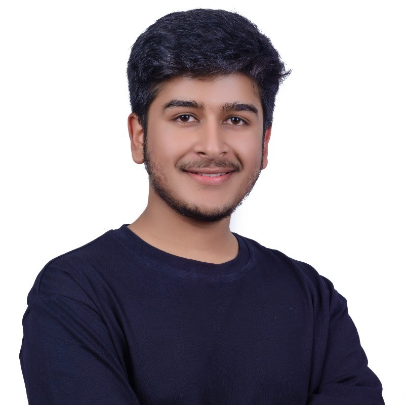

Nirvic Regmi.
I am driven by the challenge of understanding and building systems that learn, reason, and scale. My work spans reliable software engineering, machine learning, and intelligent agents. Guided by analytical thinking and first-principles reasoning, I seek to understand the mechanisms beneath complex systems, question assumptions, and translate ideas into practical, intelligent solutions.
A conceptual map of the ideas that shape my work, represented as a latent space.
In code and in thought, much of my work is the gradual pursuit of simpler explanations for complex systems.
About
I am motivated by a persistent desire to understand how systems work beneath the surface. That curiosity has led me from backend engineering to experimenting with machine learning models, refining them through repeated training, and studying the principles that govern their behaviour.
My current focus includes PyTorch, model-training pipelines, retrieval-augmented generation (RAG), and agents designed to operate reliably beyond controlled demonstrations.

Technical toolkit
Tools and technologies I work with:
I am drawn to the principle of compression: finding the simplest model that preserves the essential structure of a complex problem.
Expertise
Software and Backend Engineering
Designing and developing scalable backend systems, RESTful APIs, database architectures, and distributed services. Emphasis on sound architectural principles, operational reliability, and solving problems across the full system—not merely at the application layer.
AI and Intelligent Systems
Developing AI applications that combine large language models, retrieval-augmented generation, vector databases, and tool-using agents. Exploring local inference, model integration, and agentic workflows to make intelligent systems more capable, useful, and dependable.
Machine Learning and Deep Learning
Studying machine learning, neural networks, and sequence models through both theory and implementation. Building models from first principles to understand the mathematics, computational mechanisms, and learning dynamics behind them.
Selected Work
ServeNepal
A digital governance platform connecting citizens with district administrators through a unified system for service requests, progress tracking, and administrative analytics.
Podcast Scraper
An automated podcast-feed collection system featuring subscriptions, frequent feed updates, and full-text search across the archived content.
Meeting Summarizer
An AI-powered meeting assistant that transcribes recorded discussions, identifies key decisions and action items, and produces concise, structured summaries.
Contact
I welcome thoughtful conversations, research discussions, and opportunities to collaborate on meaningful technical work.